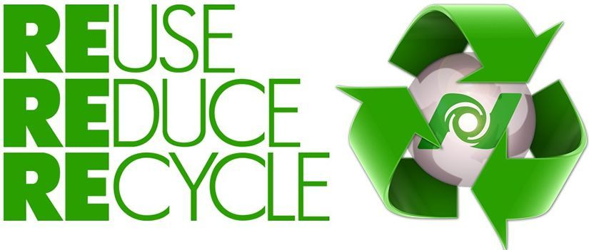

REUSE/REUTILIZAR:es darle un nuevo uso a los materiales u objetos para disminuir el consumo de energía y de materias primas. Los componentes de los objetos no poseen finalidades fijas: si se utilizaron para fabricar algo, pueden utilizarse par fabricar otra cosa distinta.
REDUCE/REDUCIR: es disminuir el consumo, tanto de bienes como de energía ya que ambos generan residuos.
RECYCLE/RECICLAR: es un proceso cuyo objetivo es convertir desechos en nuevos productos en materia prima para su posterior utilización.
